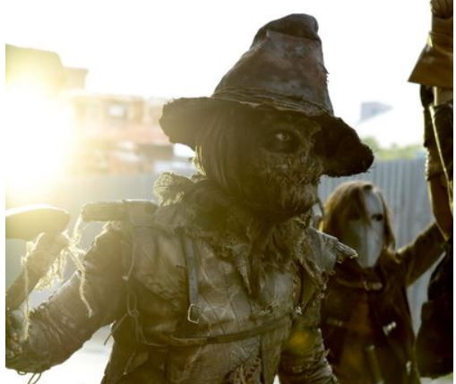
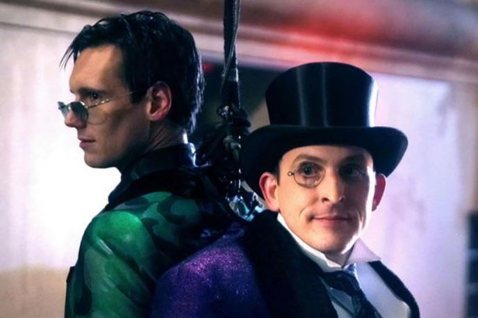

在5×01《Year Zero》中，Jim Gordon和Bruce Wayne必须面对一个即将陷入全面混乱的哥谭市。他们的任务是确保这座城市安全，但那些在上次战斗中幸存的坏人们纷纷重出江湖、割据称王，令这项任务变得复杂而艰难。Oswald成了哥谭的实际统治者，住在市政厅，占据了弹药厂，他将采取更加卑劣的手段来确保自己的地位并从战争中大发横财。Nygma虽然死而复生，但却失去了理智，他不知道发生了什么，不确定自己经历了什么，不理解自己所处的环境究竟是真实还是虚幻，他认为自己快要疯了。Barbara将完成另一次「变身」，她用铁腕手段统治自己的帮派，朝着更黑暗、更刺激、更血腥的道路前进。她在女妖俱乐部里囤积了大量食物，身边有大量女保镖随侍左右。俱乐部在混乱中仍然声色犬马、纸醉金迷，歌照唱，舞照跳，酒照喝，似乎外界的一切都与他们无关。稻草人到处绑架和折磨无辜群众。与此同时，Selina Kyle的命运仍然难以预料，这让她深感不安，甚至有自杀倾向。那个观众熟悉的Selina不复存在，取而代之的是一个黑暗消沉的Selina。Bruce在百忙之中仍然抽空去探望身负重伤、情绪低落的Selina，多少能给她一点安慰。但在最关键的时刻，Bruce可能做出一个永久改变两人关系的决定。
关于终结季，你还需要知道……
从5×01的集名不难判断，本季将使用漫画《Batman: Zero Year》的素材，该漫画主要讲述刚刚成为蝙蝠侠的Bruce Wayne阻止谜语人侵害哥谭市的邪恶企图。终结季的故事时间将向前跳跃3个月，「通向外界的所有大桥都被Jeremiah和Ra’s al Ghul炸毁后（漫画情节为地震所致），哥谭市成了一座孤岛，政府只疏散了部分人就将哥谭市彻底隔离，拒绝再为哥谭市承担任何义务，剩下的人们只能自己为生存而战」，「人们开始相信宗教……不是基督教也不是天主教，而是第七封印（Seventh Seal）」，「Jim Gordon和Bruce Wayne必须一条街区一条街区地夺回这座城市的控制权」。
终结季的副标题为《黑暗骑士传说》（Legend of the Dark Knight），毫无疑问本季将重点关注蝙蝠侠的成长。哥谭市的治安状况急剧恶化，一些臭名昭著的、DC漫画迷耳熟能详的坏蛋为夺取城市的控制权大打出手，Gordon及哥谭警局为稳定局面不得不拼尽全力。一些从未出现过的DC漫画经典反派角色将在本季登场，其中包括Bane（Shane West）。在本剧中Bane真名叫做Eduardo Dorrance，是Jim Gordon在军中服役时的老战友，战后两人便失去了联系。多年后Dorrance回到了哥谭市，领导一个精英战士小组帮助Gordon恢复「无主之地」（No Man’s Land）的秩序。他手下的战士对他绝对忠诚，因为他无法容忍任何形式的背叛。但是Gordon敏锐地察觉，Dorrance对哥谭市的真实企图远比他口头所说的更黑暗、更邪恶。值得一提的是，DC原版漫画中并没有Eduardo Dorrance，只有Edmund Dorrance。Edmund Dorrance是Bane的父亲，绰号「蛇王」（King Snake）。制片人承诺本剧中Bane的背景故事将在一定程度上尊重漫画，「包括他重伤Alfred的那件事」，「Bane是个非常彪悍、非常愤怒的人，但他出色的能力和过硬的心理素质让他成为非常合格的政府特工」。
Jaime Murray在终结季扮演关键多集角色Theresa Walker，她是Jim Gordon本季的主要敌人。她有一个非常黑暗的秘密，她带着这个秘密来到哥谭市实施自己的计划。无论她走到那里，都会谋求绝对控制权。她总在计划，因此总能领先一步。她的终极目标不仅和自己的计划和任务有关，也和自己的家庭有关。DC漫画中并无任何名叫Theresa Walker的角色，因此Theresa Walker可能是独创的角色，也可能是某个DC漫画角色的代号。
其他已确定在终结季登场的DC漫画经典反派角色包括疤脸（Scarface）、腹语者（Ventriloquist）、老妈（Mother）、孤儿（Orphan）、希瓦夫人（Lady Shiva）等。虽然Jeremiah就是「小丑」（Joker），但你永远不会听到本剧使用这个称谓——因为「高层人士明令禁止本剧使用小丑的称谓」，「这个称谓是DC电影专用」。当然这种说词也可能是剧组故布迷阵，为的是在终结季里给观众一个惊喜——这种猜测是有根据的，因为本季有一集的集名叫做《化工厂》（Ace Chemicals），而DC漫画中小丑的绿头发和疯狂的性格就是在一家化工厂掉进有毒化学品中所致（最常见的一种小丑起源故事）。Jeremiah本季的新女友是个穿着多彩时装的、喜欢玩溜冰鞋的女人，几乎相当于Harley Quinn。这个角色应该就是Francesca Root-Dodson在第四季中扮演的Ecco。《黑暗骑士回归》（The Dark Knight Returns）中的变种帮（The Mutant Gang）及其变种领袖（Mutant Leader）、经典漫画角色喜鹊（Magpie）亦在终结季出现。喜鹊是个穿黑衣的、性格古怪的女人，疯狂喜爱一切闪亮的东西。为了满足自己的收藏癖，她甚至不惜冒险盗窃企鹅的财物。在漫画中喜鹊真名叫Margaret Pye，是哥谭市博物馆的馆长，她总想将那些自己喜欢的东西据为己有。制片人曾打算让本剧角色Barbara Kean变成Harley Quinn或喜鹊，但最终放弃了这种想法。
制片人还透露，终结季中的Nygma已经是完完整整的谜语人，Oswald已经是完完整整的企鹅（可能在大结局中变成经典的胖企鹅形象），Selina已经是完完整整的猫女，就连Gordon也成了DC漫画熟悉的「留着胡子戴着黑边眼镜的警察局长」。「每个角色都将发展为他们注定的形象」——特别是Bruce Wayne本人，他有了新的蝙蝠洞和蝙蝠战衣。在全剧大结局中，故事时间将向前跳跃10年，此时Bruce Wayne已经成为羽翼丰满的蝙蝠侠。
其他已确定在终结季回归的角色包括Zsasz、疯帽子（Mad Hatter）、稻草人（Scarecrow）、怪人雨果（Hugo Strange）等。
终结季最开始只有10集，但后来扩展到12集。无论10集还是12集，都是全剧最短的一季。
Barbara Kean的扮演者Erin Richards将执导全剧第100集《The Trial of Jim Gordon》，而这集的编剧则为Jim Gordon的扮演者Ben McKenzie。这集在拍摄顺序上是全剧最后一集（最后拍摄），但播出顺序与拍摄顺序不同。